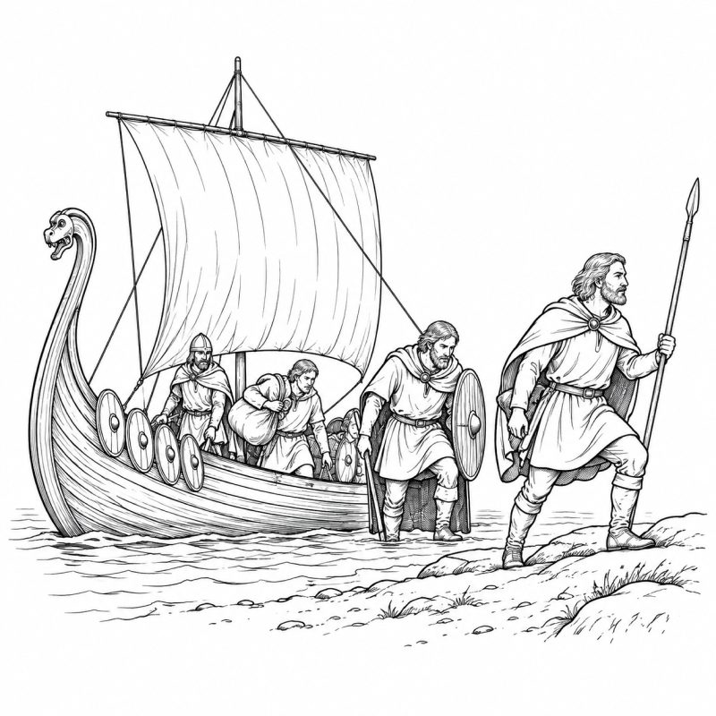

Who are you?
Meet Lucy, Natalia and Mark. Learn to introduce yourself, describe professions, talk about countries and form questions in English. Read, listen, and practise at your own pace.
 Outsiders · English by Robert Fader
Outsiders · English by Robert FaderWho are you?
Introduce yourself and ask for personal information.

Hello! My name is Lucy. I am from London. I am an artist. I paint pictures and I draw people. I like art, music and books. I have a small studio in London. I have many pencils, brushes and notebooks. I don’t have a car. I speak English, and I study other languages too. I like meeting people from different countries. What about you?
Useful questions
What is your name?
My name is Lucy.
Where are you from?
I am from London.
What do you do?
I am an artist.
Your turn
Write five sentences about yourself. Use I am… / I am from… / I live… / I like… / I have…
Your writing is saved on this device only.
I am a teacher
Say what people do and follow a detective’s first clues.

Hello, my name is Mark. I am a detective and I live in London. I like old books, art and difficult mysteries. I usually work alone, but now I have a special mission. My client asked me to find a stolen painting. The painting is very old and important to his family. I have some photos, a notebook and a few clues, but I don’t know where the painting is. Maybe it is still in London. Well, I don’t have much time. I have to go to work!
A / an before professions
Use a before consonant sounds: a detective, a teacher, a doctor.
Use an before vowel sounds: an artist, an engineer.
What does Mark do? He is a detective. What does Lucy do? She is an artist.
Where are you from?
Describe origins, interests and countries you would like to visit.
Lucy: Natalia, what countries do you like?
Natalia: I like Russia, of course, but I also like Italy and Spain. What about you?
Lucy: I like Italy too. I love the art, the cities and the food. I also like France.
Natalia: Do you like Argentina?
Lucy: Yes, I do! I want to visit Argentina one day.
Natalia: Me too. My boyfriend talks a lot about Mendoza. I want to see the mountains there.
Lucy: Mendoza sounds beautiful. What other countries do you want to visit?
Natalia: Japan. I think the culture is interesting.
Lucy: I want to visit Japan too. And Greece, because I like history and the sea.
Natalia: Maybe we need a very long holiday!
Countries and nationalities
Where are you from? I am from Argentina. What country do you want to visit? I want to visit Japan. Why? Because I like its culture.
One country, two countries.
Grammar studio
Learn the verb to be, negatives, questions and short answers.
TO BE · Affirmative
I am · You are · He/She/It is · We/They are.
Lucy is an artist. Mark is a detective. We are friends.
Negative & short forms
I am not / I'm not
She is not / isn't
They are not / aren't
Mark isn't from Paris.
Make questions
Move am/is/are to the beginning:
Lucy is an artist. → Is Lucy an artist? → Yes, she is.
They are friends. → Are they friends? → Yes, they are.
Ask about professions
What do you do? I'm a teacher. What does he do? He's a detective.
Where does English come from?
A short history of how English became an international language.

English is a Germanic language. More than 1,500 years ago, the Angles, Saxons and Jutes arrived in Britain. Their languages became the basis of Old English. Later, Vikings brought Old Norse words such as sky, egg and window.
In 1066, the Normans conquered England. The French language influenced English, giving it words such as government, army and justice. Latin and Greek also contributed many words, especially in science and education. Over time, Old English became Middle English and then Modern English.
English later spread through trade, migration, the British Empire, technology and international communication. Today it contains words from many languages.
5th century: Germanic-speaking groups settle in Britain.
Viking period: Old Norse influences the language.
1066: Norman French adds thousands of words.
Modern era: English spreads across the world.
Story lab
An interactive detective scene inspired by the Unit 1 characters.
Mark: Good morning. My name is Mark. I'm a detective.
Lucy: Hello, Mark. I'm Lucy. I'm an artist.
Mark: Are you from London?
Lucy: Yes, I am. My studio is here.
Mark: Do you know anything about a missing painting?
Lucy: No, but Natalia likes art. You can ask her!
Be the next character
Write four lines for Natalia. She introduces herself, says where she is from and offers to help Mark.
You’ve completed the learning path.
Keep your notes, revisit any lesson, or move on to the existing Unit 1 test. Your original test has not been changed.